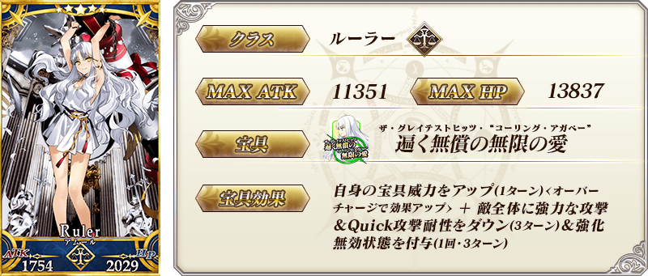
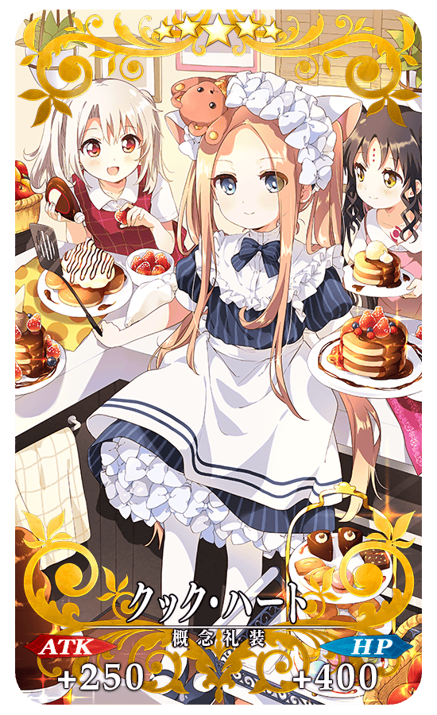
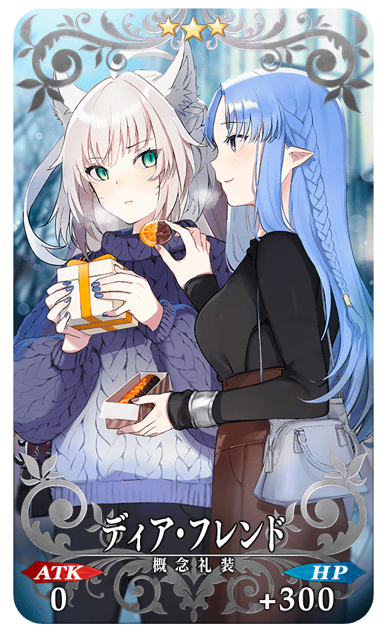
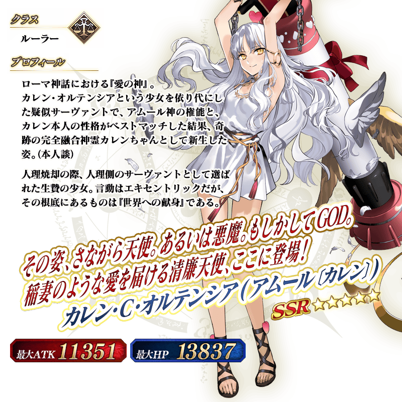

◆「復刻 情人節2021 卡蓮・Ｃ・奧爾黛西亞(埃莫〔卡蓮〕)Pick Up召喚」期間◆
期間:2022年2月16日(三) 17:00～2月23日(三) 11:59
從期間限定活動「瑪納諾紀念品情人節 ～巧克力之樹與女神的選擇～」關聯從者之中，期間限定從者「★5(SSR)卡蓮・Ｃ・奧爾黛西亞(埃莫〔卡蓮〕)」與2021年的「情人節2021Pick Up召喚(每日交替)」中登場的3種期間限定概念禮裝Pick Up！
期間限定「復刻 情人節2021 卡蓮・Ｃ・奧爾黛西亞(埃莫〔卡蓮〕)Pick Up召喚」中只限女性從者為抽出對象！
▼期間限定從者
・★5(SSR)卡蓮・Ｃ・奧爾黛西亞(埃莫〔卡蓮〕)
▼期間限定概念禮裝
・★5(SSR)クック・ハート
・★4(SR)ビター・ジュエル
・★3(R)ディア・フレンド
Pick Up期間中，Pick Up對象從者與概念禮裝的出現機率提升！
詳情請在聖晶石召喚畫面左下的召喚詳細確認。
11次召喚中確定1張★4(SR)以上和確定1位★3(R)以上的從者！ ※確定★4(SR)以上包含從者和概念禮裝。
【重要】
◆關於「確定召喚」功能◆
・期間限定Pick Up召喚中，在329次以內未召喚到Pick Up對象★5(SSR)從者情況，只限1次可在進行第330次的召喚時「確定召喚」必定1位Pick Up對象★5(SSR)從者。
・在同時間舉辦多個期間限定Pick Up召喚的情況，各召喚分別(每個召喚畫面頁面)計算召喚次數。另外，以每日交替Pick Up召喚的內容切換情況，各自分別計算召喚次數。舉例，每天23:00時間點變更召喚內容的Pick Up召喚情況，請注意在召喚內容變更的時間點會重置召喚次數的計算。
・請注意期間限定Pick Up召喚中滿足以下任何條件的話，在召喚畫面會顯示「Pick Up對象確定召喚已結束。(ピックアップ対象の確定召喚は終了しました。)」，該召喚中「確定召喚」功能變成無效。
・第329次前召喚到Pick Up對象★5(SSR)從者
・在第330次確定召喚到Pick Up對象★5(SSR)從者
・召喚次數在期間限定Pick Up召喚中用有償聖晶石、無償聖晶石、呼符進行召喚時都會計算。目前的召喚履歴可於該召喚畫面內確認。
※每10次召喚進行的「＋1次獎勵召喚」與用有償聖晶石進行的1天1次限定「1次召喚」也在計算的對象。
※每個召喚內容會分開計算「＋1次獎勵召喚」與1日1次限定的「1次召喚」。請注意在變更召喚內容那天的23:00，「＋1次獎勵召喚」和「1次召喚」的計算會被重置。
※透過有償聖晶石1個「1次召喚」的計算，也會在每天3:00重置。
・在進行11次召喚時滿足「確定召喚」功能條件的情況，在施行11次召喚中會確定召喚1位Pick Up對象★5(SSR)從者。屆時，11次召喚中保障的確定1張★4(SR)以上與確定1位★3(R)以上的從者會另外生效。
・期間限定Pick Up召喚結束後，無法繼承召喚次數到別的召喚。
・故事召喚、友情點數召喚為「確定召喚」功能的對象外。
◆關於1天1次限定的有償聖晶石召喚◆
※可以1天1次限定於期間限定召喚用有償聖晶石1個進行「1回召喚」。
※透過有償聖晶石1個的「1次召喚」，每天3:00重置。
※透過有償聖晶石1個的「1次召喚」對應的聖晶石召喚有好幾個的情況，各個召喚中1天各進行1次有償聖晶石1個的「1次召喚」。
※請注意就算進行透過有償聖晶石1個的「1次召喚」，不包含在1次獎勵的計算。
※聖晶石購入時賦予的「附贈(オマケ)」是做為無償聖晶石而不包含在有償聖晶石的個數，請注意別搞錯。另外，持有聖晶石的細項，可從持有道具一覧確認。
◆關於透過召喚獲得從者硬幣◆
在期間限定召喚、故事召喚、友情點數召喚中入手從者時，可獲得該從者的從者硬幣。
◆有關從者的注意◆
※埃莫〔卡蓮〕進行靈基再臨後，卡面的名稱會變成卡蓮・Ｃ・奧爾黛西亞。
※下述的從者在Pick Up期間結束後不會追加到故事召喚。
・★5(SSR)卡蓮・Ｃ・奧爾黛西亞(埃莫〔卡蓮〕)
※除了性別「女性」的從者外，下述的從者也包含在抽出對象。
・★5(SSR)狄奧斯庫洛伊
・★5(SSR)恩奇杜
・★4(SR)夏爾・德翁
・★4(SR)阿斯托爾福(Rider)
◆有關概念禮裝的注意◆
※請注意本召喚中成為抽出對象的期間限定概念禮裝只限下述，其他的期間限定概念禮裝為抽出對象外。
・★5(SSR)クック・ハート
・★4(SR)ビター・ジュエル
・★3(R)ディア・フレンド
※請注意下述的概念禮裝在期間限定活動「瑪納諾紀念品情人節 ～巧克力之樹與女神的選擇～」中沒有活動道具的掉落獲得數提升的效果。
・★5(SSR)クック・ハート
・★4(SR)ビター・ジュエル
・★3(R)ディア・フレンド
※下述的概念禮裝，Pick Up期間中也能靠友情點數召喚獲得。
・★3(R)ディア・フレンド
※在自動變還設定登錄★3(R)概念禮裝的情況，下述的概念禮裝會變成自動變還的對象。
・★3(R)ディア・フレンド
 ※埃莫〔卡蓮〕進行靈基再臨後，卡面的名稱會變成卡蓮・Ｃ・奧爾黛西亞。
|  |
★★★★★SSR |

|
★★★★SR |
|  |
★★★R |
 ※埃莫〔卡蓮〕進行靈基再臨後，卡面的名稱會變成卡蓮・Ｃ・奧爾黛西亞。
強化「★5(SSR)卡蓮・Ｃ・奧爾黛西亞(埃莫〔卡蓮〕)」的特別關卡「從者強化關卡」，在迦勒底之門永久追加。
不僅進行對象從者的強化，也可獲得聖晶石做為關卡通過報酬。
※請注意在從者強化關卡沒有文字冒險部份。
◆開放條件◆
持有的強化對象從者，必須使其最終再臨。
※未持有對象從者的話，不會出現關卡。
※關卡沒有舉辦期限。
介紹「★5(SSR)卡蓮・Ｃ・奧爾黛西亞(埃莫〔卡蓮〕)」的寶具演出！
※埃莫〔卡蓮〕進行靈基再臨後，卡面的名稱會變成卡蓮・Ｃ・奧爾黛西亞。
其他還有，
・瑪納諾紀念品情人節 ～巧克力之樹與女神的選擇～
・情人節2022Pick Up召喚
以期間限定舉辦中！
關於詳情，請自下述橫幅確認。
■「瑪納諾紀念品情人節 ～巧克力之樹與女神的選擇～」詳細情報

■「情人節2022Pick Up召喚」詳細情報